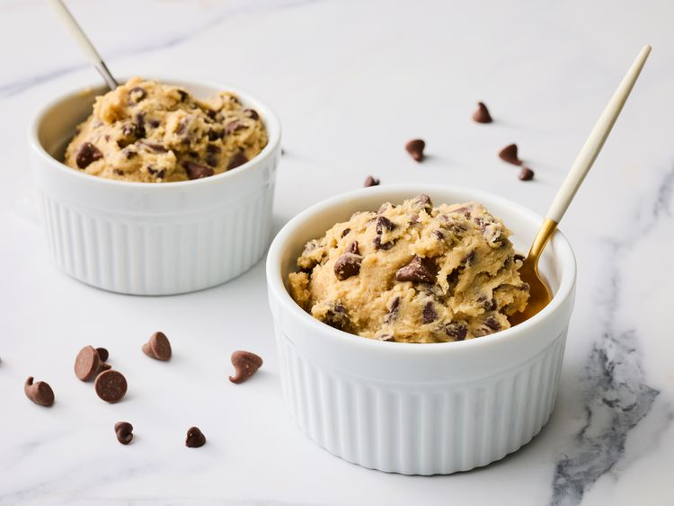

cookie dough recipie
This edible cookie dough recipe is egg-free and will satisfy any cravings for chocolate chip cookies without the wait. I
have made this with friends before and they said that they loved the taste. So do I. The leftovers will keep in the
freezer for up to 3 months.

Ingredients:
- flour
- brown sugar
- butter
- vanilla
- salt
- chocolate chips
Instructions:
- Gather all ingredients.
- To heat-treat your flour so it is safe to use: Place flour in a microwave-safe dish and cook for 1 minute and 15
seconds, stirring it every 15 seconds. Set aside.
- Beat sugar and butter with an electric mixer in a large bowl until creamy.
- Beat in vanilla extract and salt. Add heat-treated flour; mix until a crumbly dough forms.
- Stir in milk until dough is just combined; fold in milk chocolate chips and mini chocolate chips.Serve and enjoy!